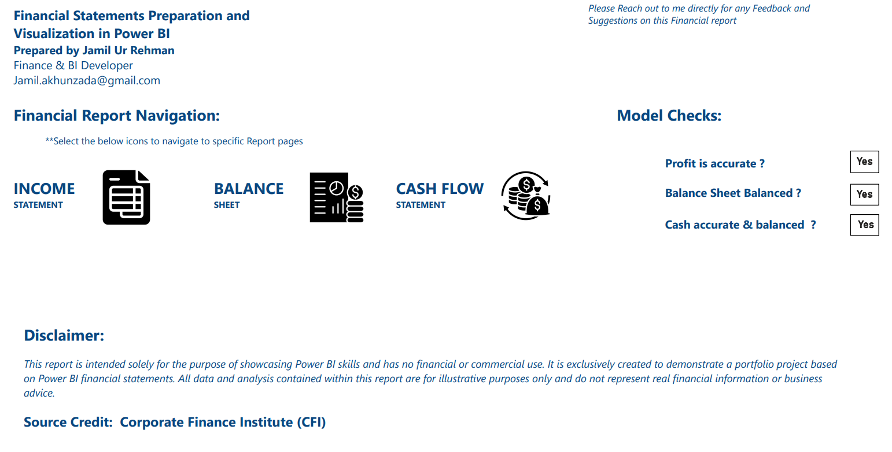

Financial Statements from the Database
Why rebuild the statements in Excel every month, and check by eye that the balance sheet balances?

All 7 report pages at a glance
Click any card to open it above · ← → keys and swipe work tooMonth-end statements shouldn't be rebuilt by hand
Many finance teams export the trial balance to Excel every month, rebuild the statements, and check by eye that the balance sheet balances. It is slow, it depends on one person, and every manual step is a chance for an error that nobody notices until the auditors do.
Live statements that check themselves
- Connect to the sourcePower BI reads the SQL accounting database directly, so statements update on refresh: no exports, no copy-paste.
- Lay the statements out properlyIncome statement with gross profit, EBIT and net income subtotals and margins; balance sheet; indirect cash flow reconciling to closing cash.
- Build in the controlsChecks confirm profit is right, the balance sheet balances and cash ties out, visible on the home page.
- One model, two viewsThe same statements switch between yearly reporting and monthly management accounts.
Numbers management can rely on, on day one
Statements ready on refresh
Month-end reporting stops depending on a rebuild in Excel.
Errors are flagged before anyone reads the page
If profit, balance or cash doesn't tie, the check panel says so.
Ratios tracked, not recalculated
Current ratio and debt ratio trends are always up to date for lenders and the board.
Profit explained as cash
The indirect cash flow shows where profit went: working capital, capex or financing.
Built on a Corporate Finance Institute (CFI) practice dataset. For technical readers: the SQL and DAX walkthrough is on GitHub.